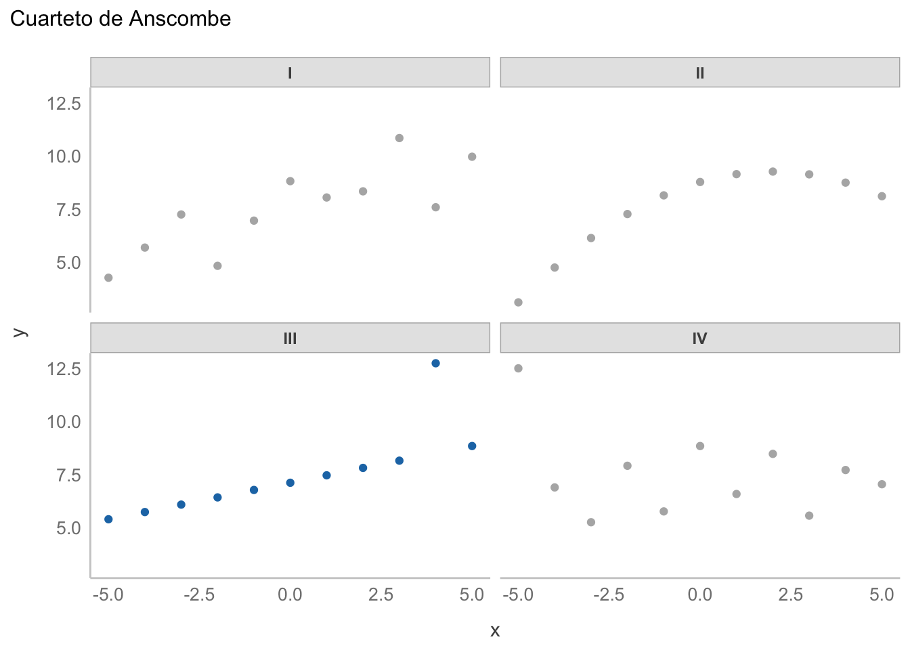
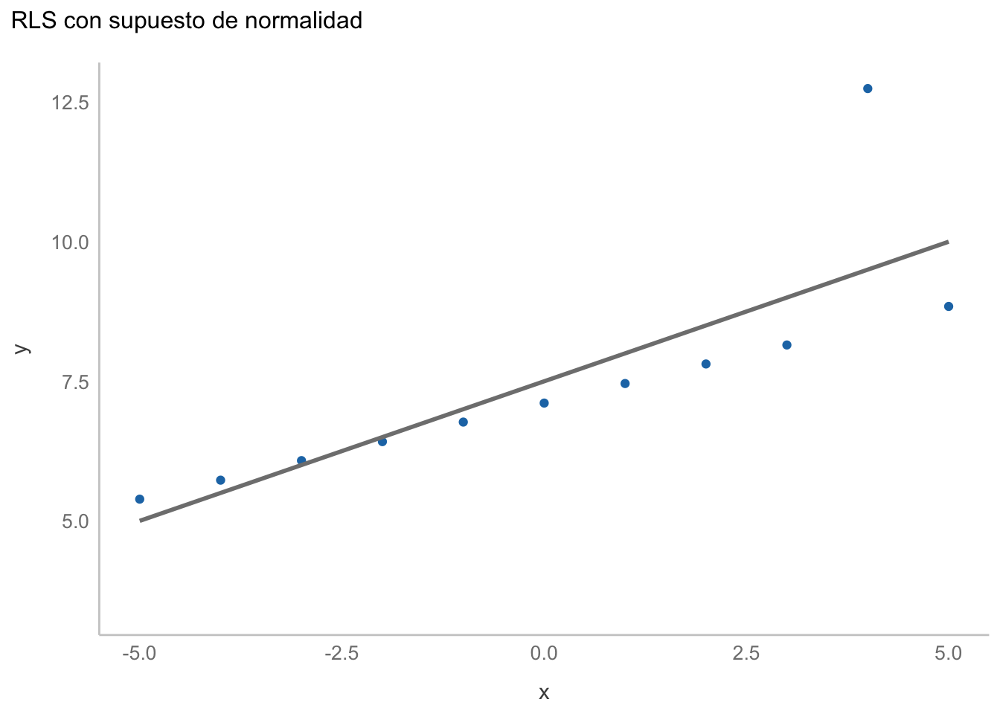
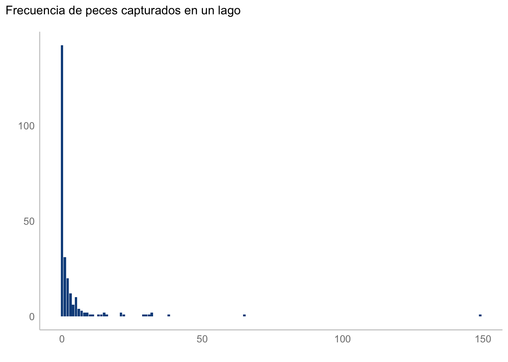
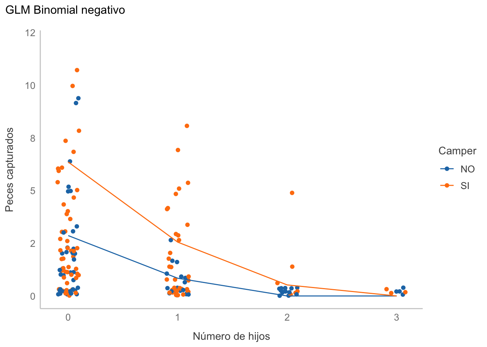
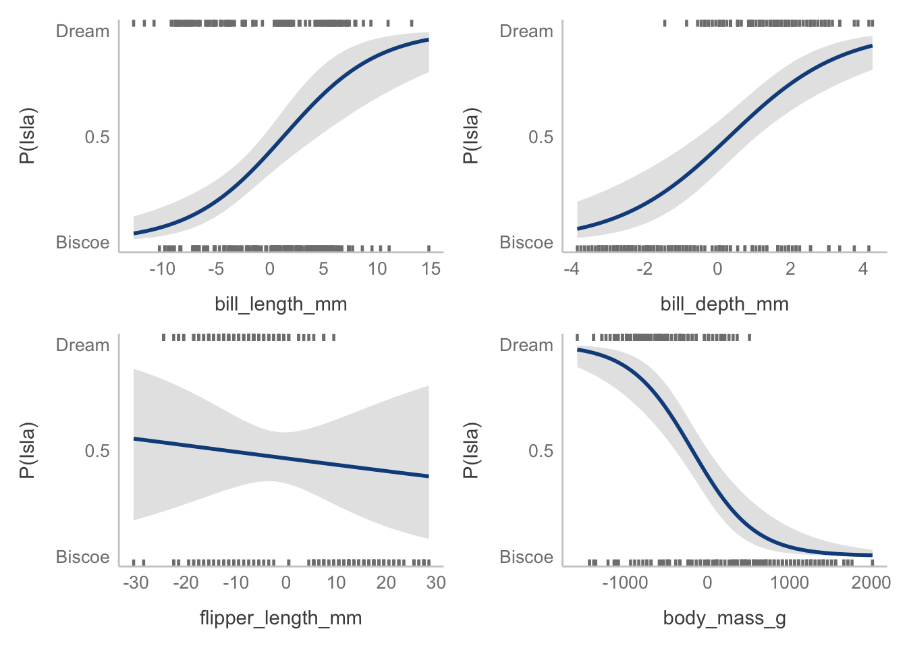

library(ggplot2)
library(stats4)
library(brms)
library(visreg)
library(pscl)
library(MASS)
library(MuMIn)19 Modelos Lineales Generalizados
19.1 Librerías
19.2 Funciones personalizadas
# Tema personalizado
blank_theme <- function(){
theme(panel.grid.minor = element_blank(),
panel.grid.major = element_blank(),
panel.background = element_blank(),
axis.line = element_blank(),
aspect.ratio = 1/1.61,
axis.ticks = element_blank(),
text = element_text(colour = "gray50"),
legend.position = "none"
)
}19.3 Problemas familiares
En la sesión anterior mencionamos cómo utilizar combinaciones lineales de variables para predecir una variable continua, pero también recordarás que en la sesión de RLS hablamos de modificar el supuesto de la distribución de nuestros errores para obtener una mejor estimación, lo cual conforma una parte fundamental de los modelos lineales generalizados (GLMs).
La modificación puede ser tan “simple” (al menos en términos de intuición) como relajar el supuesto de normalidad, pero podemos también utilizar otras distribuciones que nos permitan modelar otro tipo de información. Bueno, hoy aterrizaremos esa última idea: La estructura principal de un GLM sigue siendo un modelo lineal, aunque nuestro supuesto de la distribución de errores no será exclusivamente normal, sino que puede tomar alguna otra familia de distribuciones, enlazada a nuestros datos con alguna función. En la sesión de hoy revisaremos:
- Regresiones robustas, expandiendo un poco la distribución t como distribución de errores y revisando una alternativa.
- Funciones de enlace y enlace inverso.
- Regresiones para conteos: Poisson, Binomial Negativa y sus variantes infladas en zeros.
- Selección de modelos; i.e., cómo seleccionar el mejor de un conjunto de modelos candidatos.
- Regresiones para clases: Regresión logística binomial y multinomial.
OJO: Por practicidad obviaré la división datos de entrenamiento-prueba; sin embargo, es algo que SIEMPRE se debe de tener en cuenta
19.4 Regresiones robustas
La idea de una regresión robusta la revisamos en la sesión de RLS; es decir, utilizar una distribución con colas más altas que una distribución normal para poder contender con el efecto de puntos extremos, pero expandamos esa idea. ¿Qué significa el “peso” de las colas de una distribución? Qué tanta densidad (o masa, para distribuciones discretas) de probabilidad está acumulada lejos de la tendencia central. En palabras más sencillas, una distribución con colas ligeras como la normal piensa que la probabilidad de tener valores lejos de la tendencia central es muy baja; por lo tanto, consiidera “todos” los datos como igual de importantes y reacciona moviendo la estimación. ¿No me crees? Veamos un caso extremo, utilizando el tercer conjunto de datos de el cuarteto de Anscombe:
# Almacenados en R como anscombe
ansc <- read.csv("datos/anscombe.csv")
ansc$x <- scale(ansc$x, center = TRUE, scale = FALSE)
ggplot(data = ansc, aes(x = x, y = y, color = conjunto)) +
geom_point() +
facet_wrap(~conjunto) +
blank_theme() +
labs(title = "Cuarteto de Anscombe") +
scale_color_manual(values = c("gray70", "gray70", "#1f77b4", "gray70"))
Si vemos su distribución de y notaremos que no es exactamente normal, debido a ese punto extremo en 12.5:
ansc_iii = ansc[ansc$conjunto == "III",]
ggplot(data = ansc_iii, aes(x = y)) +
geom_density(color = "#1f77b4", fill = NA) +
blank_theme() +
labs(title = "Densidad de y del conjunto III de Anscombe")Ajustemos entonces nuestra regresión lineal simple:
ansciii_lm <- lm(y~x, data = ansc_iii)
summary(ansciii_lm)
Call:
lm(formula = y ~ x, data = ansc_iii)
Residuals:
Min 1Q Median 3Q Max
-1.1586 -0.6146 -0.2303 0.1540 3.2411
Coefficients:
Estimate Std. Error t value Pr(>|t|)
(Intercept) 7.5000 0.3728 20.120 8.61e-09 ***
x 0.4997 0.1179 4.239 0.00218 **
---
Signif. codes: 0 '***' 0.001 '**' 0.01 '*' 0.05 '.' 0.1 ' ' 1
Residual standard error: 1.236 on 9 degrees of freedom
Multiple R-squared: 0.6663, Adjusted R-squared: 0.6292
F-statistic: 17.97 on 1 and 9 DF, p-value: 0.002176Gráficamente:
ggplot(data = ansc_iii,
aes(x = x, y = y)) +
geom_point(color = "#1f77b4") +
geom_smooth(method = "lm",
color = "gray50",
fill = NA) +
blank_theme() +
labs(title = "RLS con supuesto de normalidad")`geom_smooth()` using formula 'y ~ x'
No se ve mal; sin embargo, es claro que el punto extremo está influenciando la estimación.Podemos aplicar algún criterio de detección de valores extremos (o deformar nuestros datos) para cumplir con el supuesto de normalidad; sin embargo, más que parchar nuestros datos, es preferible modificar nuestro modelo. Cambiemos entonces a una regresión con una verosimilitud t de Student:
LLt <- function(b0, b1, df, sigma){
# Encontrar los residuales. Modelo a ajustar (lineal)
R = ansc_iii$y - ansc_iii$x*b1 - b0
# Calcular la verosimilitud. Residuales con distribución t de student
R = suppressWarnings(brms::dstudent_t(R, df = df,
mu = 0, sigma = sigma))
# Sumar el logaritmo de las verosimilitudes
# para todos los puntos de datos.
-sum(R, log = TRUE)
}
mlet_fit <- mle(LLt,
start = list(b0 = 0, b1 = 0, df = 2, sigma = 1),
nobs = length(ansc_iii$y),
lower = list(b0 = -20, b1 = -12, df = 1, sigma = 0.1),
upper = list(b0 = 20, b1 = 12, df = 30, sigma = 10))
summary(mlet_fit)Warning in sqrt(diag(object@vcov)): NaNs producedMaximum likelihood estimation
Call:
mle(minuslogl = LLt, start = list(b0 = 0, b1 = 0, df = 2, sigma = 1),
nobs = length(ansc_iii$y), lower = list(b0 = -20, b1 = -12,
df = 1, sigma = 0.1), upper = list(b0 = 20, b1 = 12,
df = 30, sigma = 10))
Coefficients:
Estimate Std. Error
b0 7.1141555 0.015785311
b1 0.3453896 0.005152567
df 30.0000000 36.983300378
sigma 0.1000000 NaN
-2 log L: -81.09539 Ahora empatemos ambas regresiones en un mismo gráfico:
coefs_t <- coef(mlet_fit)
fitted <- coefs_t[1] + coefs_t[2]*ansc_iii$x
ggplot(data = ansc_iii,
aes(x = x, y = y)) +
geom_line(aes(x = x, y = fitted),
color = "#ff7f0e",
size = 1, alpha = 0.7) +
geom_smooth(method = "lm",
color = "gray50",
fill = NA) +
geom_point(color = "#1f77b4") +
labs(title = "Regresión robusta",
subtitle = "OLS (gris) vs. t de Student (naranja)") +
theme_bw()`geom_smooth()` using formula 'y ~ x'
En este caso el punto extremo ya no influenció la estimación de la regresión, lo cual en la mayoría de los casos es algo deseable. Aunque esta es una forma de realizar una regresión robusta, existen otras. Una de ellas es modificar la función de pérdida, como por ejemplo con la Regresión con pérdida Huber. Los detalles matemáticos los dejaré para tu investigación, lo realmente importante es entender que los errores (residuales) son ponderados diferencialmente en función de su magnitud; es decir, se resta importancia a aquellos residuales que sean grandes y, de hecho, si están por encima de cierto límite, son descartados por completo. Su implementación es sumamente sencilla, pues lo único que tenemos que hacer es modificar lm por la función rlm de la librería MASS:
rr.huber <- MASS::rlm(y~x, data = ansc_iii)
summary(rr.huber)
Call: rlm(formula = y ~ x, data = ansc_iii)
Residuals:
Min 1Q Median 3Q Max
-0.0049962 -0.0028591 -0.0007219 0.0028667 4.2421008
Coefficients:
Value Std. Error t value
(Intercept) 7.1150 0.0013 5309.3547
x 0.3457 0.0004 815.8284
Residual standard error: 0.005248 on 9 degrees of freedom¿Notas algo interesante? Los resultados son los mismos que en la regresión t de Student, aunque aquí podemos ver la ponderación dada a cada punto:
hweights <- data.frame(x = ansc_iii$x,
resid = rr.huber$residuals,
weight = rr.huber$w)
hweightsGráficamente:
ggplot(data = ansc_iii,
aes(x = x, y = y)) +
geom_smooth(method = MASS::rlm,
color = "#ff7f0e",
size = 1, alpha = 0.7,
fill = "blue") +
geom_smooth(method = "lm",
color = "gray50",
fill = NA) +
geom_point(aes(color = hweights$weight)) +
labs(title = "Regresión robusta",
subtitle = "OLS (gris) vs. Huber (naranja)") +
scale_color_gradient(name = "Peso",
low = "firebrick",
high = "#1f77b4") +
theme_bw()`geom_smooth()` using formula 'y ~ x'
`geom_smooth()` using formula 'y ~ x'Como era de esperarse, los resultados son los mismos que los de la regresión t de Student. En la definición de un GLM tenemos tres elementos importantes:
- El modelo lineal, que es el mismo en ambos casos.
- Una familia para el error, que no modificamos en la regresión Huber; sin embargo la familia sería Gaussiana (Normal).
- Una función de enlace (o enlace inverso), que en ambos casos sería una función de identidad; es decir, ninguna modificación para pasar de nuestros datos a la distribución del error.
Es decir, que en un sentido amplio, ambas aproximaciones son GLMs, aunque usualmente nos referimos a GLMs cuando la distribución del error es diferente a una distribución normal. ¿Cuál aplicar? Ya que el resultado es el mismo, puedes escoger una u otra, solo ten en cuenta que la implementación por máxima verosimilitud de un modelo t de Student puede tener muchos bemoles al momento de optimizarse, además de que su salida es incompatible con algunas otras funciones, incluyendo el cálculo de los intervalos de confianza (para los coeficientes de la regresión Huber puedes utilizar la función confint.default(rr.huber)).
19.5 Funciones de enlace
Este es un buen momento para hablar de un tema que a veces causa bastante confusión: las funciones de enlace o las funciones de enlace inverso. Estas son funciones “arbitrarias” (ojo a las comillas) que tienen una sola función (valga la redundancia): poner la salida de nuestro modelo lineal en los “requerimientos” de la familia de nuestro error. En el caso anterior, la distribución t es una distribución continua de probabilidad que está centrada en 0, como esperaríamos de nuestros residuales, por lo que la función de enlace es una función de identidad; es decir, no hacemos nada a la salida del modelo para poder obtener residuales continuos centrados en 0. Pero este no siempre es el caso; de hecho, las aplicaciones más comunes de GLM siempre requieren de algún enlace. ¿Y los enlaces inversos? Son simple y sencillamente el inverso de la función de enlace aplicados al lado contrario de la igualdad. Matemáticamente es más claro:
En un GLM con una función de enlace tendríamos la siguiente estructura para nuestro modelo lineal:
\[ f(y) = \beta_0 + \beta_1*x \] Es decir, modificamos la salida (\(y\)) de nuestro modelo lineal utilizando una función \(y\). Si es una función logarítmica, por ejemplo, se vería de la siguiente manera:
\[ log(y) = \beta_0 + \beta_1*x \]
Pero obtendríamos exactamente lo mismo si utilizamos un poco de álgebra y resolvemos para \(y\), aplicando un exponencial a ambos lados de la igualdad:
\[ e^{log(y))} = e^{(\beta_0 + \beta_1*x)} \\ \therefore \\ y = e^{(\beta_0 + \beta_1 *x)} \]
El apelativo “inversa” es simplemente para indicar el lado dónde se está aplicando el enlace. Habiendo dicho esto, vayamos a una de las aplicaciones más comunes para GLM: la regresión para conteos.
19.6 Regresiones para conteos
Te preguntarás qué tienen de especial los conteos, y la respuesta es muy simple: son valores enteros mayores o iguales a 0. Esto quiere decir que una distribución normal (t, o cualquier otra distribución continua) NO es adecuada para modelar los datos. ¿Qué hacemos? Utilizamos alguna distribución discreta que nos permita tratar con el número de veces en que algo sucede.
19.6.1 Regresión Poisson
Muy posiblemente esto te suene a ensayos de Bernoulli o ejercicios con distribuciones Poisson (¿cuántos autos rojos pasan en una hora por un punto determinado?, por ejemplo). Pues justamente podemos utilizar esa misma distribución (Poisson). Esta distribución tiene un par de peculiaridades. La primera es que asume que los eventos ocurren de manera independiente entre sí, a un intervalo fijo de espacio o tiempo. La segunda es que su único parámetro (\(\lambda\)) representa tanto la media como la varianza de la distribución (más adelante hablaremos de las implicaciones de esto), por lo que DEBE ser positivo. ¿El problema? Nuestros residuales pueden ser negativos. ¿Qué podemos hacer? Aplicar una función de enlace inverso que nos permita restringir nuestro predictor a valores positivos, justo como la función exponencial, por lo que nuestro modelo se expresaría de la siguiente forma:
\[ \lambda = e^{(\beta_0 + \beta_1*x)} \\ y \sim Poisson(\lambda) \]
Para aplicarlo resolvamos un problema en el cuál trataremos de predecir el número de peces capturados en un lago por un pescador, considerando el número de hijos y si llevan o no un camper:
csvurl <- "https://stats.idre.ucla.edu/stat/data/fish.csv"
fish <- read.csv(csvurl)[,c("child", "camper", "count")]
head(fish)Exploremos nuestros datos. Al tratarse de una variable discreta podemos, sin ningún problema, utilizar un gráfico de frecuencias:
ggplot(aes(x = count), data = fish) +
geom_bar(stat = "count", color = NA, fill = "dodgerblue4") +
blank_theme() +
labs(title = "Frecuencia de peces capturados en un lago",
x = element_blank(),
y = element_blank())
¿Qué otro gráfico utilizarías? Por otra parte, habrás notado un par de cosas: a) hay una gran cantidad de ceros y b) tenemos algunos puntos “extremos”; i.e., algunos pescadores que tuvieron demasiada suerte y que capturaron demasiados peces en comparación con el resto. Este tipo de distribuciones no son extrañas en la naturaleza, y tienen un par de bemoles de los cuales hablaremos después. Por lo pronto, construyamos nuestro GLM. Para ello utilizaremos la función glm de R base, cuyo uso es sumamente similar al de la función lm, salvo que indicaremos la familia como un argumento adicional:
poiss <- glm(count~., data = fish, family = "poisson")
summary(poiss)
Call:
glm(formula = count ~ ., family = "poisson", data = fish)
Deviance Residuals:
Min 1Q Median 3Q Max
-3.7736 -2.2293 -1.2024 -0.3498 24.9492
Coefficients:
Estimate Std. Error z value Pr(>|z|)
(Intercept) 0.91026 0.08119 11.21 <2e-16 ***
child -1.23476 0.08029 -15.38 <2e-16 ***
camper 1.05267 0.08871 11.87 <2e-16 ***
---
Signif. codes: 0 '***' 0.001 '**' 0.01 '*' 0.05 '.' 0.1 ' ' 1
(Dispersion parameter for poisson family taken to be 1)
Null deviance: 2958.4 on 249 degrees of freedom
Residual deviance: 2380.1 on 247 degrees of freedom
AIC: 2723.2
Number of Fisher Scoring iterations: 6La salida es muy similar a otras que hemos visto. Cómo llamamos a la función glm, un descriptor de los residuales, los coeficientes con sus respectivas pruebas de nulidad (después hablaremos de su interpretación), seguidas de algunos elementos propios de la función GLM. Primero tenemos una nota sobre un parámetro de dispersión, que se asumió como 1. Esto quiere decir que estamos asumiendo que la media es igual a la varianza, lo cual podemos tomar solo como un recordatorio para que revisemos dicho supuesto. Después tenemos información sobre la devianza del modelo. Podemos utilizar la devianza residual para realizar una prueba de bondad de ajuste para el modelo global. Esta es la diferencia entre la devianza del modelo y la máxima devianza de un modelo ideal, donde los valores predichos son idénticos a los observados (devianza nula). Por lo tanto, buscamos valores pequeños de la devianza residual. Dicha prueba podemos realizarla de la siguiente manera:
with(poiss, cbind(res.deviance = deviance,
df = df.residual,
p = pchisq(deviance, df.residual,
lower.tail = F))) res.deviance df p
[1,] 2380.12 247 0Tenemos un valor de p sumamente pequeño, lo cual sugiere que el modelo no se encuentra bien ajustado. ¿Alguna idea de por qué? Como te imaginarás, tiene que ver con la distribución de nuestros datos, eso que mencionamos sobre muchos ceros y algunos pescadores con mucha suerte. De hecho, cada una de estas características es un problema en sí mismo, así que abordemoslos uno por uno. Una pregunta que puedes estarte haciendo es ¿y la función de enlace? Va implícita en la familia. En este caso, es una función de enlace logarítmica, que es el equivalente a la función de enlace inverso que revisamos antes.
str(poisson()[1:5])List of 5
$ family : chr "poisson"
$ link : chr "log"
$ linkfun :function (mu)
$ linkinv :function (eta)
$ variance:function (mu) 19.6.2 Exceso de ceros: Regresión Poisson Inflada en Cero
La primera peculiaridad de nuestros datos es que hay una cantidad enorme de ceros. Aunque esto puede suceder de manera natural, la distribución Poisson no es capaz de contender adecuadamente con estos casos. Afortunadamente, hay una manera de extender el modelo Poisson para permitirnos arreglar esto. En su forma más fundamental, asumiremos que tenemos dos procesos:
- Uno modelado con una distribución Poisson.
- Uno generando ceros adicionales.
Es decir, cuando hablemos de modelos “inflados en cero” estamos hablando de una situación en la que tenemos ceros “falsos” o, mejor dicho, extras a los ceros verdaderos que nos podemos encontrar. Veamos qué pasa al ajustar este modelo a nuestros datos. Para este modelo necesitaremos de la función zeroinfl() de la librería pscl:
zi_poiss <- pscl::zeroinfl(count~child+camper, data = fish)
summary(zi_poiss)
Call:
pscl::zeroinfl(formula = count ~ child + camper, data = fish)
Pearson residuals:
Min 1Q Median 3Q Max
-1.2395 -0.8340 -0.4694 -0.1764 24.1051
Count model coefficients (poisson with log link):
Estimate Std. Error z value Pr(>|z|)
(Intercept) 1.64535 0.08278 19.877 <2e-16 ***
child -0.77272 0.09103 -8.489 <2e-16 ***
camper 0.75526 0.09112 8.289 <2e-16 ***
Zero-inflation model coefficients (binomial with logit link):
Estimate Std. Error z value Pr(>|z|)
(Intercept) 0.0424 0.2426 0.175 0.8613
child 1.0244 0.2200 4.656 3.22e-06 ***
camper -0.7085 0.2926 -2.422 0.0155 *
---
Signif. codes: 0 '***' 0.001 '**' 0.01 '*' 0.05 '.' 0.1 ' ' 1
Number of iterations in BFGS optimization: 10
Log-likelihood: -1025 on 6 DfLa salida es similar al caso anterior, solo tenemos coeficientes para la regresión logística para clasificar ceros verdaderos de falsos y los coeficientes del modelo Poisson sin el exceso de ceros; sin embargo, notarás que no hay ningún indicativo sobre si este modelo es mejor a nuestro modelo Poisson, por lo que podemos compararlos. Para ello podemos utilizar distintas alternativas: una prueba de Vuong (función vuong(mod_1, mod_2) de pscl) o utilizar una aproximación multi-modelo para la selección de modelos. Optaremos por esa última vía, la cual exploraremos a detalle más adelante. Por lo pronto, es suficiente que sepas que utilizaremos una medida llamada Criterio de Información de Akaike (AIC), y el mejor modelo será aquel que tenga el menor valor de AIC:
AIC(poiss, zi_poiss)Como era de esperarse, el modelo inflado en cero es un mejor candidato; sin embargo, tenemos un problema pendiente: nuestros pescadores muy suertudos.
19.6.3 Sobre-dispersión: Regresión Binomial Negativa
Esos pescadores muy suertudos pueden hacer lo mismo que nuestro punto extremo en el ejemplo de regresión robusta; es decir, jalar nuestras estimaciones hacia ellas y alejarlas de la estimación “real”, solo que aquí es un tanto diferente y tiene que ver con el supuesto de nuestra distribución Poisson: la media y la varianza son iguales. Este supuesto, evidentemente, no se sostiene cuando tenemos una dispersión muy grande de nuestros datos (varianza > media), lo cual genera el problema de la sobre dispersión de nuestro modelo (no de los datos). Una estrategia es cambiar nuestra verosimilitud a una distribución Binomial Negativa, la cual tiene un parámetro adicional a la distribución Poisson. Este parámetro modela, justamente, la dispersión de nuestros datos. Apliquemos entonces nuestra regresión binomial negativa:
bineg <- MASS::glm.nb(count~., data = fish, trace = F)
summary(bineg)
Call:
MASS::glm.nb(formula = count ~ ., data = fish, trace = F, init.theta = 0.2552931119,
link = log)
Deviance Residuals:
Min 1Q Median 3Q Max
-1.3141 -1.0361 -0.7266 -0.1720 4.0163
Coefficients:
Estimate Std. Error z value Pr(>|z|)
(Intercept) 1.0727 0.2425 4.424 9.69e-06 ***
child -1.3753 0.1958 -7.025 2.14e-12 ***
camper 0.9094 0.2836 3.206 0.00135 **
---
Signif. codes: 0 '***' 0.001 '**' 0.01 '*' 0.05 '.' 0.1 ' ' 1
(Dispersion parameter for Negative Binomial(0.2553) family taken to be 1)
Null deviance: 258.93 on 249 degrees of freedom
Residual deviance: 201.89 on 247 degrees of freedom
AIC: 887.42
Number of Fisher Scoring iterations: 1
Theta: 0.2553
Std. Err.: 0.0329
2 x log-likelihood: -879.4210 Notarás que esta salida es prácticamente la misma que la que tuvimos en nuestro GLM Poisson, salvo que ahora nos da el valor del parámetro de sobredispersión. Te estarás preguntando: ¿Cómo sé si, en efecto, mis modelos están sobre-dispersos? Para eso podemos utilizar una prueba de razón de verosimilitud, en la cual compararemos la verosimilitud de ambos modelos (binomial negativa y Poisson) y veremos si se ajustan a la misma distribución; es decir, la prueba de razón de verosimilitud es una prueba de bondad de ajuste, con distribución \(\chi^2\). ¿Qué es lo que estamos comparando? Si el parámetro adicional ayuda a que el ajuste del modelo mejore significativamente. Para aplicarla podemos utilizar la función odTest(mod_bn) de la librería pscl:
pscl::odTest(bineg)Likelihood ratio test of H0: Poisson, as restricted NB model:
n.b., the distribution of the test-statistic under H0 is non-standard
e.g., see help(odTest) for details/references
Critical value of test statistic at the alpha= 0.05 level: 2.7055
Chi-Square Test Statistic = 1837.7652 p-value = < 2.2e-16 A ojo de buen cubero era más que evidente que nuestro modelo estaba sobre disperso, por lo que estos resultados no son sorprendentes. Algo que puedes pensar es “si estoy comparando qué modelo está mejor ajustado, ¿puedo entonces utilizar el AIC?” Y la respuesta es, por supuesto:
AIC(poiss, zi_poiss, bineg)Y los resultados son, como debe de ser, consistentes. Llegados a este punto podrías preguntarme: “Ok, Arturo, ya corregimos para el exceso de ceros y para la sobre dispersión, pero lo hicimos de manera independiente. ¿Hay alguna manera de hacer ambas cosas al mismo tiempo?” En efecto, y es justo lo siguiente que vamos a revisar.
19.6.4 Exceso de ceros y sobre dispersión: Regresión Binomial Negativa Inflada en Cero
Y, justamente, es una combinación de ambas; es decir, utilizaremos una distribución de error binomial negativa inflada en cero. La lógica es, entonces, una combinación de ambas aproximaciones; es decir, modelaremos a los ceros verdaderos y luego construiremos el modelo de regresión binomial negativa. Para hacerlo utilizaremos la función zeroinfl() que vimos antes, solo que cambiaremos la familia a negbin:
zi_bineg <- pscl::zeroinfl(count~., data = fish, dist = "negbin")
summary(zi_bineg)
Call:
pscl::zeroinfl(formula = count ~ ., data = fish, dist = "negbin")
Pearson residuals:
Min 1Q Median 3Q Max
-0.512182 -0.497136 -0.325130 -0.003367 13.978082
Count model coefficients (negbin with log link):
Estimate Std. Error z value Pr(>|z|)
(Intercept) 1.0515 0.2700 3.895 9.84e-05 ***
child -0.9113 0.2851 -3.196 0.00139 **
camper 0.7976 0.3054 2.611 0.00902 **
Log(theta) -1.2960 0.1316 -9.849 < 2e-16 ***
Zero-inflation model coefficients (binomial with logit link):
Estimate Std. Error z value Pr(>|z|)
(Intercept) -11.499 55.699 -0.206 0.836
child 10.483 55.659 0.188 0.851
camper -9.501 55.663 -0.171 0.864
---
Signif. codes: 0 '***' 0.001 '**' 0.01 '*' 0.05 '.' 0.1 ' ' 1
Theta = 0.2736
Number of iterations in BFGS optimization: 84
Log-likelihood: -434.9 on 7 DfFinalmente, podemos comparar nuestros cuatro modelos candidatos para encontrar el más adecuado:
AIC(poiss, zi_poiss, bineg, zi_bineg)Vemos que los AIC de los modelos con distribución de error binomial negativa tienen los menores valores; por lo tanto seleccionaremos a alguno de los dos. ¿Cuál? En la siguiente sección hablaremos de las peculiaridades. Por lo pronto, sigamos con nuestro criterio de seleccionar el que tenga el menor AIC, que corresponde a la distribución binomial negativa inflada en cero. Ahora sí, podemos interpretar nuestros coeficientes.
19.6.5 Interpretación
Desafortunadamente, la interpretación no es tan simple como en la RLM o RLS, debido a la función de enlace que utilizamos.
Para facilitarnos la existencia, planteemos un modelo Poisson con un solo predictor, y la función de enlace logarítmica:
\[ Y \sim Poisson(\theta) \\ log(\theta) = \alpha + \beta x \\ \therefore \\ \theta = e^{\alpha + \beta x} \]
Pero, por las leyes de los exponentes, podemos reescribir la última ecuación como:
\[ \theta = e^{a}e^{\beta x} \] Esto quiere decir que los coeficientes no son aditivos, sino multiplicativos:
- Intercepto: \(e^\alpha\), valor de \(\theta\) cuando \(x = 0\). Si este parámetro es o no de interés depende totalmente del problema.
- Pendiente(s): \(e^\beta\).
- Si \(\beta = 0\), entonces \(e^\beta = 1\); es decir, no hay un efecto del predictor.
- Si \(\beta > 0\), entonces \(e^\beta > 1\); es decir, el predictor incrementa el valor de \(\theta\) a una tasa de \(e^\beta\) por cada incremento unitario en \(x\)
- Si \(\beta < 0\), entonces \(e^\beta < 1\); es decir, el predictor disminuye el valor de \(\theta\) a una tasa de \(e^\beta\) por cada incremento unitario en \(x\).
Recuperemos los coeficientes de nuestra regresión binomial negativa inflada en cero y exponenciémoslos:
exp(coef(zi_bineg)[1:3])count_(Intercept) count_child count_camper
2.8620079 0.4019951 2.2202680 Pongamos atención solo a aquellos coeficientes con count_, pues son los que realmente nos interesan. La interpretación entonces sería:
- Intercepto: Cuando el pescador no tiene hijos y no lleva un camper, el promedio de peces capturados es de 2.86
- Pendientes:
- Child: El promedio de peces capturados disminuye 1-0.4 veces por cada hijo adicional.
- Camper: Si el pescador tiene un camper, el promedio de peces capturados incrementa 2.2 veces.
Corolario: La interpretación depende totalmente de la función de enlace que utilicemos, y siempre es necesario aplicar el enlace para poder interpretarlos.
Para construir un gráfico podemos generar una línea con valores predichos o, mejor dicho, dos líneas: una para cada nivel de camper (en la sección de Extras encontrarás cómo funcionan los predictores categóricos en modelos de regresión).
fish$pred <- predict(zi_bineg, type = "response")
ggplot(data = fish, aes(x = child, y = count,
color = factor(camper))) +
geom_point() +
geom_line(aes(y = pred)) +
labs(title = "GLM Binomial negativo",
x = "Número de hijos",
y = "Peces capturados") +
scale_color_discrete(name = "Camper",
labels = c("NO", "SI")) +
scale_y_continuous(limits = c(0, 12),
label = scales::label_comma(accuracy = 1))Warning: Removed 16 rows containing missing values (geom_point).
O utilizando visreg:
partial_plots <- visreg::visreg(bineg,
scale = "response",
ylab = "Capturas",
gg = TRUE)
for (plt in partial_plots) {
plot(plt + blank_theme() +
scale_y_continuous(limits = c(0, 12),
label = scales::label_comma(accuracy = 1)) +
scale_x_discrete(limits = c(0, max(plt$data$x))) +
labs(x = plt$labels$x))
}Warning: Continuous limits supplied to discrete scale.
Did you mean `limits = factor(...)` or `scale_*_continuous()`?
Continuous limits supplied to discrete scale.
Did you mean `limits = factor(...)` or `scale_*_continuous()`?

Antes de cambiar la hoja, es necesario aclarar que aquí NO hay supuesto de normalidad. ¿Cuál es el punto de cambiar la distribución del error si vamos a seguir casados buscando normalidad estadística?
Y ahora podemos hablar de la selección de modelos.
19.7 Selección de modelos
El tener varios varios modelos candidatos no es algo extraño, entonces es necesario tener algún tipo de criterio que nos permita comparar entre ellos. Una aproximación es la que hemos utilizado hasta el momento; es decir, utilizar el Criterio de Información de Akaike (AIC) y seleccionar el menor. ¿Qué es el AIC y con qué se come?
19.7.1 Criterio de Información de Akaike
El AIC es un criterio basado en teoría de la información, particularmente en la divergencia Kullback-Leibler. Ese detalle matemático va más allá del alcance de este curso; sin embargo, podemos entender que está basado en la verosimilitud de un modelo dado; es decir, qué tan verosímil es que ese modelo haya generado los datos. Un detalle es que, como hemos visto en sesiones anteriores, el “ajuste” de un modelo es directamente proporcional a su complejidad (al menos vs. los datos de entrenamiento). Es, entonces, necesario penalizar de alguna manera el número de parámetros en el modelo, para no comernos un “gol” con un modelo excesivamente complejo. Puesto en una ecuación, el AIC queda de la siguiente manera:
\[ AIC = -2ln(L) + 2k \]
Donde \(L\) es la verosimilitud del modelo y \(k\) el número de parámetros. Si nuestro modelo tiene un gran número de parámetros, el valor de AIC se hará más grande, mientras que, si tiene un menor número, se hará más pequeño. ¿Qué nos dice un AIC en sí mismo? NADA, absolutamente nada. Si yo te digo que un modelo tiene un AIC de 800 no puedes saber si es bueno o malo, pues no hay una referencia. Esto nos lleva a hablar sobre algunas consideraciones que debemos de tener al utilizar el AIC:
- Valores más bajos indican modelos más parsimoniosos.
- Es una medida relativa de la parsimonia de un modelo, por lo que solo tiene sentido cuando comparamos AIC para hipótesis (modelos) alternativas.
- Podemos comparar modelos no anidados. De hecho, podríamos comparar un modelo lineal con uno no lineal.
- Las comparaciones son válidas SOLO para modelos ajustados con los mismos valores de respuesta; i.e., mismos valores de \(y\).
- Comparar muchos modelos con AIC es una mala idea, pues caemos en el mismo problema de las comparaciones múltiples, donde podemos encontrar por azar un modelo con el valor más bajo de AIC, cuando en realidad no es el modelo más apropiado.
- Para variar, cuando tratamos con tamaños de muestra pequeños (n/k < 40) el AIC pierde confiabilidad, por lo que hay que aplicar una corrección:
- \(AIC_c = AIC + \frac{2k(k+1)}{n-k-1}\)
- Dado que conforme incrementa n, el \(AIC_c\) se aproxima al \(AIC\), es una buena idea utilizar \(AIC_c\).
- Podemos encontrar múltiples modelos que tengan AICs similares, esto solo sugiere que estas hipótesis alternativas tienen soportes similares. ¿Qué tanto es tantito? Esa respuesta es un poco más compleja, y requiere que presentemos el \(\Delta{AIC}\) (también lo puedes encontrar como \(\Delta_i\)):
- \(\Delta AIC = AIC_i - AIC_{min}\); es decir, la diferencia de cada AIC respecto al valor mínimo de AIC entre los modelos candidatos. Esta transformación forza al “mejor” modelo a tener un \(\Delta AIC = 0\), y representa la pérdida de información si utilizamos un modelo candidato \(m_i\) en vez de \(m_{min}\).
- Modelos con un \(\Delta_i \leq 2\) tienen soporte substancial (evidencia),
- Modelos con un \(4 \leq \Delta_i \leq 7\) tienen considerablemente menos soporte y
- Modelos con \(\Delta_i > 10\) carecen, escencialmente, de soporte.
Recuperemos nuestra comparación anterior, calculemos los \(AIC_c\) (con la función AICc de la librería MuMIn) y calculemos los \(\Delta_i\). Como mencionábamos antes, los modelos con distribuciones binomial negativas son los que tienen el mayor soporte, mientras que los Poisson carecen de cualquier soporte (dados estos datos y modelos candidatos). También podemos ver que pesa más la sobredispersión que el exceso de ceros, pues el modelo inflado en cero es marginalmente mejor que aquel no inflado.
AICs <- MuMIn::AICc(poiss, zi_poiss, bineg, zi_bineg)
AICs$Delta <- AICs$AIC - min(AICs$AIC)
AICs19.8 Regresiones para clases
En la sesión de clasificación hablamos sobre los problemas de clasificación, y aplicamos una regresión logística; sin embargo, no entramos en detalles. Aprovechemos, entonces, para revisar un poco más a profundidad la intuición detrás de ella.
19.8.1 Regresión logística binaria
Cuando la revisamos anteriormente, definimos a la regresión logística como un modelo de RL al cual aplicaríamos una función logística, lo que nos permite restringir nuestra salida al intervalo \([0,1]\) y, por lo tanto, predecir la probabilidad de pertenencia a una clase dada. Esa definición es correcta para resumir lo más posible la técnica; sin embargo, los detalles son un poco más complejos.
La regresión logística forma parte de los GLMs; por lo tanto, consta de un predictor lineal, una familia de distribución del error y una función de enlace. La familia de distribución del error es binomial; es decir, está en términos de la probabilidad de éxitos vs. la probabilidad de fracasos. Es por esto que la regresión logística tradicional solo nos permite clasificar entre dos clases. Esto ya lo sabíamos, simplemente lo estamos formalizando, lo que tiene un poco más de detalles es la función de enlace: la función logística:
\[ logit(z) = \frac{1}{1 + e^{-z}} \]
Esta función tiene la peculiaridad de que, independientemente de los valores de \(z\) (el predictor lineal), el resultado siempre estará contenido entre 0 y 1, el cual es, convenientemente, el mismo que el dominio del parámetro \(p\) de la distribución binomial (la probabilidad de éxito). Expresado matemáticamente:
\[ \theta = logistic(\alpha + \beta x) \]
\[ y \sim Binom(\theta) \]
Apliquemos entonces una regresión logística para clasificar entre versicolor y virginica de la base iris, solo para ilustrar cómo interpretar los coeficientes. Primero, filtremos los datos:
iris_dat <- iris
iris_dat <- subset(iris,
Species == "versicolor" | Species == "virginica")Ahora ajustemos el modelo. No te olvides de dividir en entrenamiento-prueba (o, mejor aún, realizar validación cruzada), considerar si es necesario escalar los datos, y que puedes también puedes entrenar los glm utilizando la función caret::train(). Por practicidad, hagámoslo directamente.
logit_reg <- glm(Species~., data = iris_dat, family = "binomial")
summary(logit_reg)
Call:
glm(formula = Species ~ ., family = "binomial", data = iris_dat)
Deviance Residuals:
Min 1Q Median 3Q Max
-2.01105 -0.00541 -0.00001 0.00677 1.78065
Coefficients:
Estimate Std. Error z value Pr(>|z|)
(Intercept) -42.638 25.707 -1.659 0.0972 .
Sepal.Length -2.465 2.394 -1.030 0.3032
Sepal.Width -6.681 4.480 -1.491 0.1359
Petal.Length 9.429 4.737 1.991 0.0465 *
Petal.Width 18.286 9.743 1.877 0.0605 .
---
Signif. codes: 0 '***' 0.001 '**' 0.01 '*' 0.05 '.' 0.1 ' ' 1
(Dispersion parameter for binomial family taken to be 1)
Null deviance: 138.629 on 99 degrees of freedom
Residual deviance: 11.899 on 95 degrees of freedom
AIC: 21.899
Number of Fisher Scoring iterations: 10Y obtengámos los gráficos parciales, utilizando la función visreg(mod, scale = "response"), donde mod es el modelo aujustado:
partial_plots <- visreg::visreg(logit_reg, scale = "response",
ylab = "P(Especie)",
line.par = c(col = "dodgerblue4"),
fill.par = c(fill = "gray90"),
gg = TRUE)
for (plt in partial_plots) {
plot(plt +
scale_y_continuous(n.breaks = 3,
labels = c("versicolor", 0.5, "virginica")) +
theme_bw())
}


Esto ya lo conocíamos, pero ¿cómo interpretamos los coeficientes? Antes de pasar a eso, es necesario que pongamos atención al argumento scale de visreg, el cual indicamos como response. Esto lo que hizo fue poner nuestra salida en lo que nos interesa: la probabilidad de pertenencia a una especie, dadas las medidas de cada variable. Veamos qué pasa si retiramos ese argumento:
partial_plots <- visreg::visreg(logit_reg, ylab = "log-odds(Especie)", gg = TRUE)
for (plt in partial_plots) {
plot(plt + blank_theme())
}


Ahora nuestros gráficos están en la escala de nuestro modelo lineal; es decir, con response estamos introduciendo la función de enlace y graficando el GLM completo; sin embargo, esto no está presente en los coeficientes “crudos” arrojados por la función GLM, por lo que toca aplicar el álgebra correspondiente:
El modelo básico es:
\[ \theta = logistic(\alpha + \beta x) \]
El inverso de la función logística es la función logit, dada por:
\[ logit(z) = log \left( \frac{z}{1-z} \right) \]
Por lo que si tomamos la primera ecuación y aplicamos la función logit a ambos términos, obtenemos esta ecuación:
\[ logit(\theta) = \alpha + \beta x \]
O, de manera equivalente:
\[ log \left( \frac{\theta}{1-\theta} \right) = \alpha + \beta x \]
Ahora, recordemos que \(\theta\) en nuestro modelo es \(p(y = 1)\) (la probabilidad de “éxito”, o de ser virginica):
\[ log \left(\frac{p(y = 1)}{1 - p(y = 1)} \right) = \alpha + \beta x \]
La cantidad \(\frac{p(y = 1)}{1 - p(y = 1)}\) se conoce como los odds, que representan la probabilidad de éxito sobre la probabilidad de fracaso. Mientras que la probabilidad de obtener 2 al lanzar un dado es de 1/6, los odds para el mismo evento son \(\frac{1/6}{5/6} \approx 0.2\), o un éxito a cinco fracasos. En una regresión logística, \(\beta\) representa el incremento en log-odds por incremento unitario en \(x\), no en la probabilidad de pertenencia a una clase, aunque la relación entre odds y probabilidad es monótona; es decir, conforme incrementa una, la otra también.
19.8.2 Regresión logística multinomial
Al igual que en el caso anterior, simplemente extenderemos aquellos detalles que no se aterrizaron por completo, particularmente el utilizar una red neuronal como análogo a una regresión logística multinomial. Como acabamos de ver, una regresión logística binaria nos permite predecir la probabilidad de éxito; i.e., de pertenecer a una sola clase. ¿Cómo lo extendemos a más de dos clases? Podemos construir modelos una clase vs. las demás, podemos utilizar una regresión softmax, o podemos utilizar una red neuronal. Una red neuronal está formada por capas, las cuales están conectadas entre sí tal cual neuronas:

Tenemos una capa de entrada, correspondiente a nuestros valores, seguida de una o más capas ocultas, compuestas por neuronas (perceptrones) que tienen funciones de activación, las cuales están conectadas por constantes multiplicadoras (pesos o weights) a las cuales se les añade una constante (sesgo o bias), cuyo resultado, finalmente, se envía a la capa de salida \(y\) (nuestras clases objetivo), resultando en la siguiente forma:
\[ y = f(bias + \sum(weight*input)) \]
Gráficamente:

¿Suena familiar? Con solo una capa oculta y una función (\(f\)) de identidad tendríamos un modelo lineal cualquiera, solo que se ajusta mediante descenso estocástico de gradiente (fuera de esta discusión) en vez de mínimos cuadrados o máxima verosimilitud. Si esa función \(f\) la hacemos una función sigmoide (logística), tenemos entonces una regresión logística para más de dos clases. En un sentido estricto, esta aproximación no es un GLM (no tenemos una familia de distribución del error), pero se puede considerar una generalización a más de dos clases. Algo importante a tener en cuenta es que al ajustar este modelo, R toma una clase como referencia, para la cual no otorga los coeficientes. En este caso, es setosa.
logit_mult <- caret::train(form = Species~.,
data = iris,
method = "multinom",
trace = F)Loading required package: latticesummary(logit_mult)Call:
nnet::multinom(formula = .outcome ~ ., data = dat, decay = param$decay,
trace = ..1)
Coefficients:
(Intercept) Sepal.Length Sepal.Width Petal.Length Petal.Width
versicolor 18.69037 -5.458424 -8.707401 14.24477 -3.097684
virginica -23.83628 -7.923634 -15.370769 23.65978 15.135301
Std. Errors:
(Intercept) Sepal.Length Sepal.Width Petal.Length Petal.Width
versicolor 34.97116 89.89215 157.0415 60.19170 45.48852
virginica 35.76649 89.91153 157.1196 60.46753 45.93406
Residual Deviance: 11.89973
AIC: 31.89973 ¿Es un problema? Sí y no. Usualmente solo nos interesa saber qué variables son más importantes para la clasificación; es decir, qué variables son más “diferentes” entre nuestras clases, para lo cual podemos utilizar la función VarImp:
caret::varImp(logit_mult, scale = F)multinom variable importance
Overall
Petal.Length 37.90
Sepal.Width 24.08
Petal.Width 18.23
Sepal.Length 13.38Esta importancia de variables está dada por la suma de absolutos de los coeficientes para una variable (ver lecturas recomendadas para más detalles). Una manera más fácil de interpretarlos es utilizando los valores escalados con respecto al valor máximo:
caret::varImp(logit_mult)multinom variable importance
Overall
Petal.Length 100.00
Sepal.Width 43.62
Petal.Width 19.78
Sepal.Length 0.00Esto sería todo para esta clase de GLM, aunque no quiere decir que sean los únicos. Si te interesa modelar el tiempo entre eventos puedes utilizar un modelo Gamma, puedes cambiar la relación entre la media y la varianza de la regresión para conteos utilizando un modelo Quasi-Poisson en vez de un modelo con distribución binomial negativa (ver lecturas recomendadas), entre otros.
19.9 Despedida
Con esto llegamos al final del curso. Espero que el contenido haya sido de tu agrado, que te hayas llevado algo y, sobre todo, que lo aprendido te sea útil. En este momento cuentas con bases sólidas para adentrarte más en cualquiera de los temas aquí vistos, e incluso incursionar en otros temas. Una recomendación personal es revisar un paradigma de inferencia diferente: la Inferencia Bayesiana. Si te agradó mi manera de explicar, te recomiendo ampliamente que esperes mi curso “Introducción a la Inferencia Bayesiana”, que estará disponible también aquí en Dr. Plancton en los próximos meses. Te recomiendo también adentrarte más en el área del aprendizaje automatizado, pues es un mundo con un potencial enorme de aplicación a problemas biológicos. Si te interesaría un curso más enfocado a eso, házmelo saber y es posible organizarlo con algunos miembros del equipo de Dr. Plancton. Recuerda que siempre puedes contactarme en el servidor de Discord, y que siempre tendrás acceso a las actualizaciones que se hagan al curso.
Te deseo lo mejor, hoy y siempre.